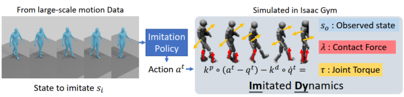
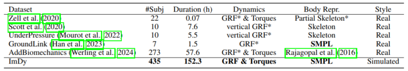
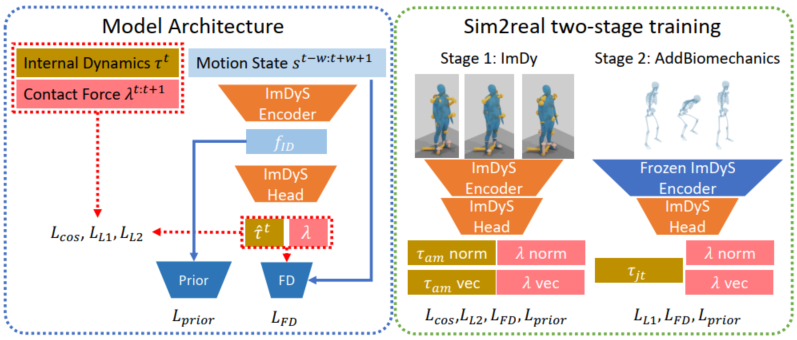

ImDy pairs diverse SMPL motion data with dynamics including full-body torques and ground reaction forces (GRF) like the right knee GRF for kneeling, which could be hard to achieve under conventional laboratory setups.

ImDy construction. We first train a motion imitation policy following Luo et al. (2023). Then, the policy is adopted to imitate arbitrary motions, with the imitated states recorded as ImDy.

ImDy compared to related human dynamics datasets. Zell et al. (2020) recorded full-body data but simplified the upper body with a single torso segment. All previous efforts contain only GRF for feet (indicated with *), while we include full body GRF.
